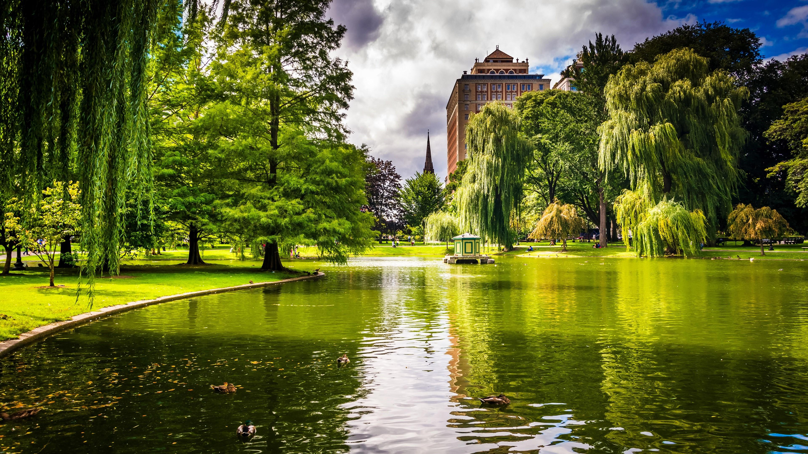

On September 17, 1630, Puritan immigrants from England founded Boston. On November 21, 1620, the two Puritan groups, the Massachusetts Bay Colony and the Plymouth Colony, which was established 60 kilometers away, were completely different in their religious practices and did not have much contact with each other. The two separate colonies did not unite until 1691 to form the Massachusetts Bay Province. Boston was built on a peninsula, connected to the mainland by a narrow isthmus, and surrounded by the mouth of the Charles River, Massachusetts Bay and Back Bay. The early European immigrants in Boston originally named the city of Three Hills based on the three hills here; it was later renamed after the hometown of some prominent immigrants-Boston, England. At that time, most of the residents of Boston were Puritans from England. John Winthrop, the original ruler of the Massachusetts Bay Colony, published a famous sermon titled "A Model of Christian Charity", who believed that there was a special contract between Boston and God. Winthrop also led to the signing of the Cambridge Agreement, which is considered a key document for the creation of the city. The ethics of the Puritans created an extremely stable and well-structured society in Boston. For example, shortly after the establishment of Boston, the Puritans founded the first American public school, Boston Latin School, and the first American university, Harvard University. To this day, hard work, moral integrity, and emphasis on education are still part of Boston’s culture.
Located near the financial district and Beacon Hill, Boston Common is the oldest park in the United States. Together with the nearby Boston Public Garden, it is part of the "Emerald Necklace" and was designed by Frederick Law Olmsted. The main park also has a riverbank recreation park along the Charles River. Other parks are scattered throughout the city. The main parks and beaches are close to Charles Town, Castle Island, or along the coastline of Dorchester, South Boston and East Boston. The largest park in the city is Franklin Park, which includes the zoo, Arnold Botanical Garden, and Stony Brook National Reserve. The Charles River separates downtown Boston from Cambridge, Watertown and the adjacent Charles Town, and to the east is the Boston Harbor and Boston Harbor Island National Recreation Area. The Nibenset River constitutes the boundary river between the Southern District of Boston, Quincy and Milton. Mystic River separates Charlestown from Chelsea and Avery, while Chelsea Creek and Boston Harbor separate Boston and East Boston.
Logan International Airport is located in neighboring East Boston and operates most of Boston's scheduled passenger services. There are also many small airports within a 30-mile radius of the city. The streets in downtown Boston have no rules to follow, because they were formed on demand centuries ago, without planning, and gradually filled the small peninsula. Some winding streets, each section has a different name, suddenly disappear, and then randomly divided into several alleys. In March 2006, the Bicycle Magazine listed Boston as one of the least suitable cities for cycling in the United States. Boston is portrayed as a "city of squares," and the intersections of major avenues are traditionally named after the city's historical figures. On the other hand, streets in Back Bay, East Boston, Boston South, and South Boston are named using a grid system. These grid road networks were built on the periphery of the cluttered streets that formed in the early days of the city.
